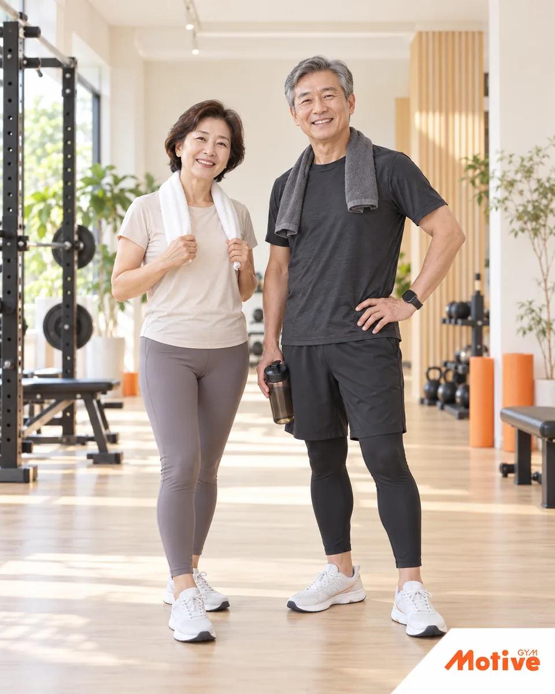
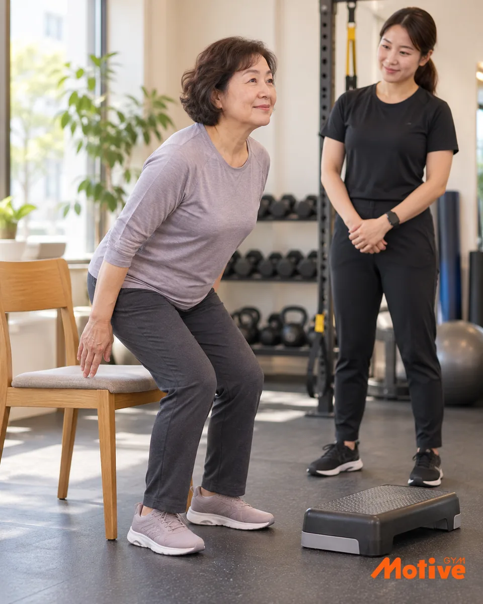
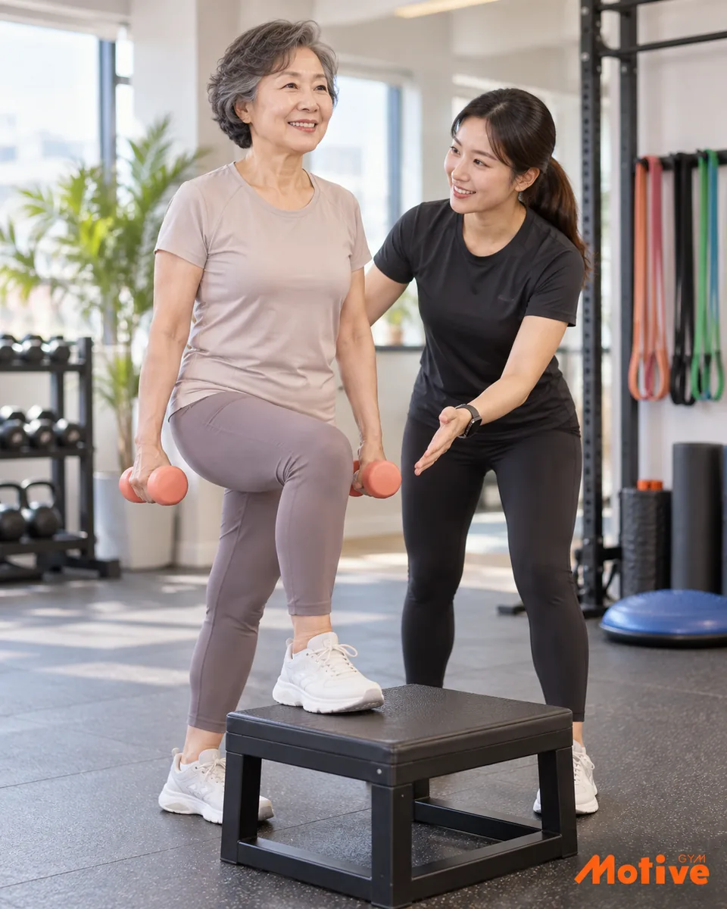
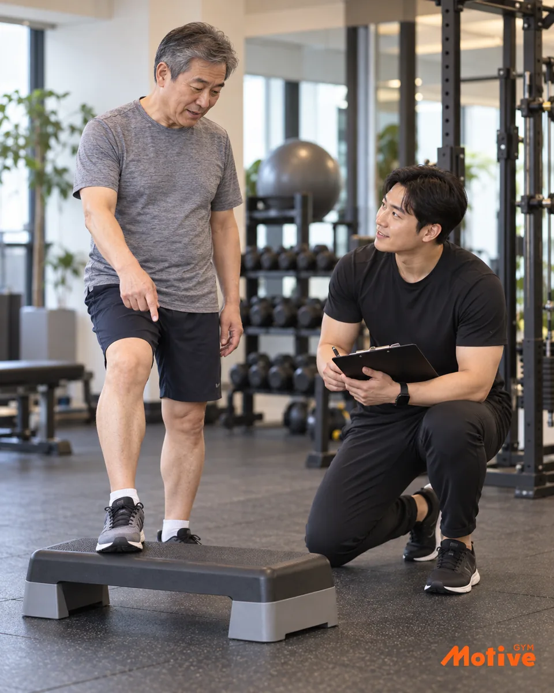
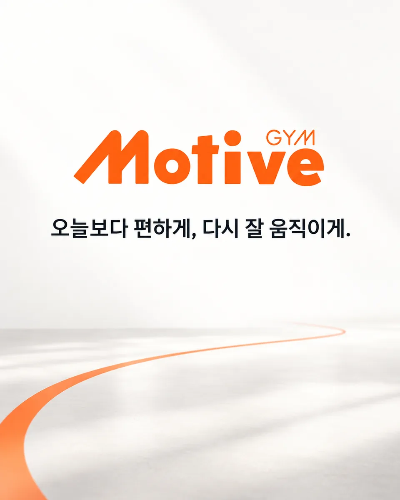

의자나 소파에서 일어날 때 손을 자주 짚는다.
모티브짐 / 50대 이후 시니어 PT
SEONGBOK SENIOR PT
50대 이후,
다시 잘 움직이기 위한 PT.
걷기만으로는 부족하다고 느끼거나, 오래 쉬었던 운동을 어떻게 다시 시작해야 할지 막막한 분을 위한 1:1 PT입니다. 체중보다 앉고 일어나기, 계단 오르기, 중심 잡기처럼 일상에 필요한 움직임을 먼저 생각합니다.

DAILY MOVEMENT CHECK
이런 변화가 느껴진다면
움직임을 다시 볼 때입니다.
하나의 동작이 어려워졌다는 사실만으로 몸의 상태를 단정할 수는 없습니다. 다만 일상에서 사용하는 힘과 움직임이 예전과 달라졌다면, 현재 수준을 확인하고 운동을 다시 시작할 신호가 될 수 있습니다.
계단을 오르면 허벅지가 먼저 지친다.
한쪽 다리로 서거나 방향을 바꿀 때 불안하다.
목·어깨·허리가 자주 뻣뻣하고 움직임이 줄었다.
예전보다 쉽게 피로해지고 활동량이 감소했다.
운동을 오래 쉬어 무엇부터 해야 할지 모르겠다.

DAILY FUNCTION
일상에서 자주 쓰는 움직임부터 확인합니다.
의자에서 일어나기처럼 익숙한 동작도 현재 몸의 힘과 균형을 살피는 좋은 출발점이 됩니다. 가능한 범위에서 반복하며 운동의 기준을 찾습니다.

WALKING + STRENGTH + BALANCE
걷기와 함께,
근력과 균형도 필요합니다.
걷기는 좋은 활동입니다. 하지만 의자에서 일어나고, 계단을 오르고, 몸의 중심을 지키는 데에는 하체와 몸통의 힘, 균형, 관절을 움직이는 범위가 함께 필요합니다.
시니어 PT는 무거운 중량부터 드는 수업이 아닙니다. 현재 가능한 범위 안에서 일상 기능과 근력, 균형, 가동성을 차근차근 기르며 오래 쉬었던 몸이 운동에 다시 적응하도록 돕는 개인 운동입니다.
FOUR FOUNDATIONS
시니어 PT가 다루는
네 가지 기준.
한 번에 많은 동작을 익히기보다 일상에서 자주 사용하는 움직임을 기준으로 시작합니다. 현재 할 수 있는 범위에서 반복하고, 몸의 반응에 따라 강도와 동작을 조정합니다.
일상 기능
앉고 일어나기, 걷기, 계단 오르기처럼 매일 반복하는 동작에 필요한 힘을 기릅니다.
근력
하체와 몸통을 중심으로 일상을 안정적으로 지탱하는 힘을 단계적으로 쌓습니다.
균형
서기와 체중 이동을 연습하며 방향을 바꾸고 중심을 잡는 움직임을 익힙니다.
가동성
굳어진 관절과 몸을 무리하지 않는 범위에서 편하게 움직이는 연습을 합니다.
HOW WE BEGIN
처음이라도
순서대로 시작합니다.
운동 경험이 적거나 오래 쉬었다면 ‘잘하는 운동’보다 ‘계속할 수 있는 운동’이 먼저입니다. 모티브짐은 수업마다 몸의 반응을 확인하고 다음 계획을 조정합니다.
생활과 목표 대화
평소 활동량, 운동 경험, 어려운 일상 동작과 원하는 변화를 듣습니다.
현재 움직임 확인
앉기, 서기, 중심 잡기 등 가능한 기본 동작에서 출발점을 찾습니다.
개인별 운동
근력, 균형, 가동성 운동을 현재 수준에 맞춰 단계적으로 진행합니다.
기록과 조정
수행 기록과 몸의 반응을 살펴 다음 수업의 동작과 강도를 조정합니다.

MOVEMENT CHECK
무리한 테스트보다, 현재 가능한 움직임부터 봅니다.
기본 동작과 균형, 수업 중 반응을 살펴 개인별 시작점을 정하고 다음 운동의 강도를 조정합니다.

WHY MOTIVE GYM
일상에 필요한 힘과
움직임을 함께 쌓습니다.
모티브짐은 근력과 균형뿐 아니라 몸의 움직임을 스스로 느끼고 인지하는 과정까지 세심하게 지도합니다.
나이가 들면서 몸의 위치와 움직임을 느끼는 고유수용감각은 달라질 수 있습니다. 모티브짐은 회원님의 움직임과 감각을 살피고, 이해하기 쉬운 설명과 시범으로 몸의 위치와 힘을 쓰는 방향을 인지하도록 돕습니다.
필요할 때는 미리 동의를 구한 후 부드러운 터치와 구체적인 피드백으로 움직임을 안내합니다. 회원님의 체력과 컨디션에 맞춰 일상에 필요한 근력과 균형을 체계적으로 훈련합니다.
움직임·감각 확인
설명·터치 피드백
근력·균형 맞춤 훈련
SENIOR PT FAQ
시작 전에
많이 묻는 질문.
시니어 PT는 몇 살부터 받을 수 있나요?
정해진 나이보다 현재 체력과 운동 경험이 더 중요합니다. 모티브짐 시니어 PT는 주로 50대 이후 운동을 처음 시작하거나 다시 시작하려는 분을 위한 개인 운동입니다.
운동을 한 번도 해보지 않았는데 괜찮나요?
네. 운동 경험이 적거나 오래 쉬었던 분도 현재 가능한 동작부터 단계적으로 시작할 수 있습니다.
목·허리·어깨가 불편해도 운동할 수 있나요?
불편함의 정도와 현재 상태에 따라 운동 가능 범위가 달라질 수 있습니다. 증상이 심하거나 운동 가능 여부가 불확실하다면 먼저 의료진의 확인이 필요합니다.
일반 PT와 무엇이 다른가요?
체중 감량이나 외형 변화만을 앞세우기보다 일상 기능, 근력, 균형, 가동성을 함께 다루며 운동 재시작에 초점을 둡니다.
모티브짐은 어디에 있나요?
성복역 4번 출구 앞에 있습니다. 정확한 길 안내는 네이버 지도에서 확인해 주세요.

START WITH MOTIVE
내 일상을 내 힘으로
편하게 이어가기.
오늘보다 편하게, 다시 잘 움직이게.
성복역 4번 출구 앞 모티브짐에서 현재 할 수 있는 움직임부터 시작하세요.
상담은 무료이며, PT 수업과 비용은 상담 후 별도로 안내합니다.